Introduction
Acknowledgement
What do you need to use A2V2
MacintoshInstallation
Apple II
Connecting the machines
MacintoshTransferring disks
Apple II - hardware setup
Apple II - software setup
Different methods of disk transferThe bundled disk images
Configuring the ADT program on the Apple II
Sending a disk to the Mac
Sending a disk image to the Apple II
Specifying file names
Canceling a disk transfer
Limitations
Release notes
The Apple II computer was originally released by Apple in 1977, and became very
popular during the first half of the 1980's. Even today, many people keep the memory
alive, by using an Apple II emulation program such as
Virtual ][.
The programs and data for the Apple II were usually stored on 5.25" floppy disks (or "diskettes").
These disks won't fit in modern day computers anymore, so emulation pograms cannot directly access them.
Instead, the emulators use disk images, which are files containing the data of one diskette each.
A2V2 (which stands for Apple II - Virtual ][) is a macOS application that enables the conversion of actual Apple II diskettes to disk image files as well as the other way around: creating Apple II diskettes from disk image files. In order to do this, you need a working Apple II computer with a disk drive and a serial port.
Part of A2V2 is based on the work of Paul Guertin, the author of ADT (Apple Disk Transfer). The ADT application, which is used on the Apple II during disk transfer, is an open source project and freely available via the Internet. For your convenience, version 2.1 of this program is bundled with A2V2 under the GNU General Public License (GPL), which means the ADT source code is included as well.
To use the program, you need two computers: a Macintosh and an Apple II. The requirements for each are described below.
|
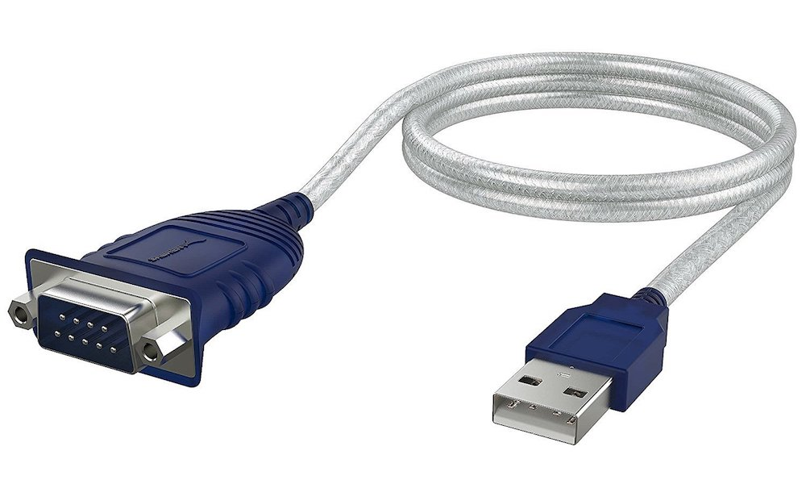 |
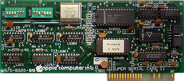
To connect the two machines, you need a serial cable that fits the connectors at both ends.
Note that when you connect two computers directly via a serial connection, you must use a modem eliminator, or null-modem cable. If you have an Apple Super Serial Card, the modem eliminator is built-in: make sure the jumper on the card points to the word "Terminal" rather than "Modem".
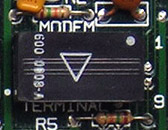
On the Apple //c, the best way to go is to use an Apple //c serial printer cable. This is basically a null-modem cable. Connect the cable to the Apple //c on built-in serial port no. 2. On top of that you might need some adapter or gender changer your cable to connect to the Mac USB-to-Serial adapter. This picture gives an idea of the sort of components needed.
|
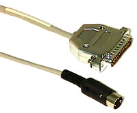 |
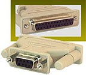 |
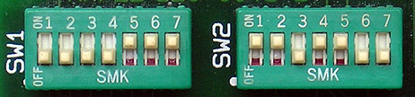
Not all switches are equally important, because most options will be set from the software. This table shows which switches are relevant:| Switch | Value | Meaning |
| 1-5 and 1-6 |
|
Enable communications mode (as opposed to printer mode). |
| 1-7 |
|
Together with 2-7, enable CTS (as opposed to secondary CTS). |
| 2-6 |
|
No interrupts |
| 2-7 |
|
Together with 1-7, enable CTS (as opposed to secondary CTS). |
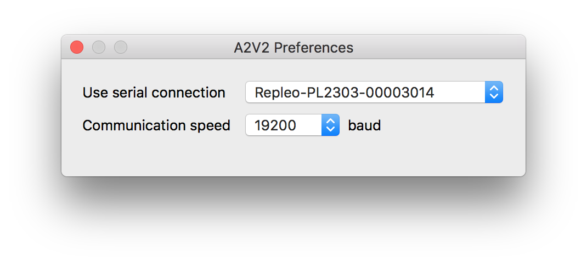
Note that the serial ports in your configuration might have different names than the one shown in the picture.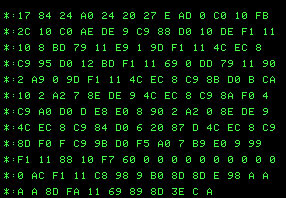
After everything has been transmitted, the Mac sends a BSAVE command to the Apple II, causing it to save the ADT program on the disk in the current drive.ADT supports different methods of disk transfer. They are all listed in the next table.
| Method | Direction | Description | Image format |
| Sector | Apple II to Mac | Creates a disk image from a diskette formatted by one of the main operating systems: DOS 3.3, ProDOS, UCSD Pascal or CP/M. The diskette is supposed to contain 35 tracks of 16 sectors each. The resulting disk image format is compatible with most Apple II emulators, including Virtual ][. | .dsk |
| Sector | Mac to Apple II | Copies a disk image to a diskette on the Apple II. The diskette must have been formatted beforehand. The disk image is supposed to contain 35 tracks of 16 sectors each. | .dsk, .do, .po |
| Nibble | Apple II to Mac |
Creates a disk image from a diskette that has 35 tracks, but does not comply with the standard sector
format. Some software manufacturers used this technique to make their distribution disks copy-protected;
by using non-standard sectors, DOS programs were unable to make a copy. Nibble copy can also be used to
copy DOS 3.2 diskettes (they have 13 sectors instead of 16).
The nibble copy method only works with the Super Serial Card version of ADT, not with the Apple Communications Card version. The resulting disk image format is compatible with most Apple II emulators, including Virtual ][. It is recommended to test the result well, to make sure A2V2 analyzed the non-standard disk patterns correctly. |
.nib |
| Half-track | Apple II to Mac |
Create a disk image from a diskette that does not have the usual 35 tracks, but contains one or
more "half-tracks". Some software manufacturers used this technique to make their distribution disks
copy-protected.
This transfer method only works with the Super Serial Card version of ADT, not with the Apple Communications Card version. The resulting disk image format is compatible with Virtual ][. It is recommended to test the result well, to make sure A2V2 analyzed the non-standard disk patterns correctly. |
.v2d |
If you are sure a diskette is formatted in a standard way, always use a sector transfer. If you don't know how a diskette is formatted, first try to transfer it to the Mac with a sector transfer, and test the result. If that approach doesn't work, try a nibble transfer. If the result is still not satisfactory, try the half-track transfer. The latter two methods take considerably more time than the sector transfer, but there is a good chance the resulting disk image will work with the emulator.
Note that disk drives existed that were capable of reading and writing 40 tracks per diskette instead of 35. A2V2 and ADT do not support this format.
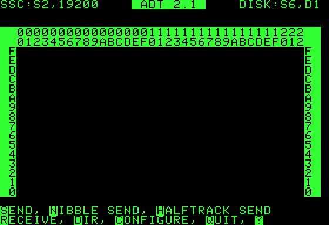
The top line shows the configuration of the ADT program: it expects the serial card in slot 2, will use 19200 baud as the transmission speed, and will use the disk in slot 6, drive 1. If any of these options does not match the configuration of your Apple II, you can easily modify them by typing "C", which gives this screen:
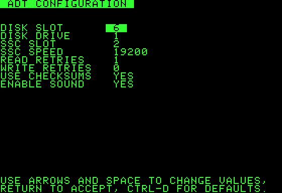
Use the space bar or the up and down arrows to select an option, and use the left and right arrows to change a value. The escape key returns without saving; the return key saves the new values and takes you back to the main screen. The configuration options are explained in the next table.
| Option | Description |
| Disk slot and drive | The slot and drive number of the disk drive ADT will use. On the Apple //c, use slot #6, and specify drive #1 to use the built-in drive, or drive #2 for the external drive. |
| SSC Slot | The slot where the Super Serial Card is. On the Apple //c, use the default setting, slot #2. |
| SSC speed | Use the highest speed that works, and make sure it matches the speed configured on the Mac. |
| Read retries | Only applicable for sector transfer (not nibble or half-track transfer). It specifies the number of times ADT will try to read a sector before giving up. The recommended value is 1 or 2. If a particular disk gives trouble, try to increase the value. |
| Write retries | The number of times ADT will try to write a sector before giving up. The recommended value is 0; if a disk gives trouble writing, simply don't use it! |
| Use checksums |
Only applicable for sector transfer (not nibble or half-track transfer). DOS puts a checksum at the end of each
sector as an error-detection measure. If the checksum is wrong, it means the data is probably corrupt, resulting
in an I/O error. Setting this parameter to NO will skip this check: even if the checksum is wrong, the sector
will be processed. This may be of some help in transferring unreliable disks, but be aware the results are
unreliable as well. Thoroughly test the resulting disk image in your emulator!
When you modify this parameter, ADT patches the copy of DOS in memory. If you're using a non-standard version of DOS, the code that checks for checksum errors may have been moved to a different address. In that case, ADT will show the words "DO NOT CHANGE" next to the parameter. It will not actually prevent you from changing it, however. |
| Enable sound | YES means ADT will beep when a transfer is finished, and on some other occasions. If this parameter is set to NO, ADT will be totally silent. |
Note: configuration changes made this way are stored in memory only and not on disk. If you want to make the changes permanent, read the section "The bundled disk images".
The time required is typically 1 to 2 minutes for a sector transfer, 3 to 5 minutes for a nibble transfer and up to 7 minutes for a half-track transfer.
Progress information is shown on the Apple II as well as on the Mac. On the Apple II, the ADT software shows progress characters per disk sector, or per track in case of a nibble / half-track transfer. When a sector or track gets a "." it has been processed correctly. If a sector gets a "*", it could not be read. In that case the transfer does continue, but the erroneous sector is sent as all zeros. The resulting disk image might not work correctly, and it is recommended to try a nibble transfer.
When a nibble or half-track transfer is complete, the Mac window shows a "reliability score", which is a number between 0 and 1. It tells something about how well A2V2 was able to analyze the track data. A higher number is better. When the reliability is below 0.9, you have to be careful and test the resulting disk image thoroughly to see if everything works.
The best way to format a disk on the Apple II is to boot with DOS 3.3, replace the boot disk with the disk to be formatted, and at the Applesoft prompt issue the command "INIT HELLO". Or, if you want to format the disk in a specific drive, do something like "INIT HELLO,S6,D2".
~/Documents/Virtual ][/A2V2.
The file names you can type on the Apple II are limited, because the machine won't let you type non-ASCII characters, and on some machines you cannot even type lowercase letters. To avoid this restriction, A2V2 supports a special feature: when you enter the file name "@" on the Apple II, the Mac will present a file open or file save panel, allowing you to specify the file in a Mac-like way. This method also allows you to work with files outside the working folder if you wish to.
A2V2 comes with two disk images. They are:
To set up an ADT disk with your preferences, first make sure you can transfer a disk to the Apple II, as explained before. Then transfer the disk image "ADT.dsk" to the Apple II and boot from it. You'll see a welcome screen that looks like this:
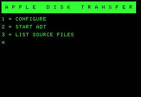
The first time you use the disk, you must choose option 1, which will guide you through the setup. You must specify which ADT flavor you are going to use (Super Serial Card, Apple Communications Card, or Apple //c), and you can change any default settings to match your particular configuration.
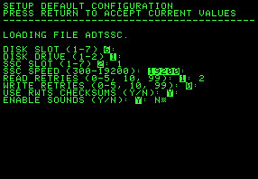
The current value for each option is shown highlighted, and when you don't want to change it, just press
the Return key. When you are finished, the program saves a customized ADT program on the disk, containing
the configuration parameters specified.
The next time you boot from the disk, you can choose option 2, and go directy to your customized ADT program.
The third option is for the technically interested. It allows you to inspect (and copy if you wish to) the ADT source files. You don't need a real Apple II for this; it is actually more convenient to use Virtual ][. The source files are on the disk image "ADT Source.dsk", and the program will ask you to insert that disk. You are then asked to choose which file you want to list: the source of one of the ADT programs, or the GPL (the license file). You can display each file on the screen or print it.
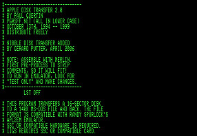
The "print" option is the best choice if you want to have a good look at a file, because Virtual ][
will produce a pdf file you can open with Adobe Reader or Apple Preview.
Printing also allows you to export the file:
in Virtual ][, select "Print to Clipboard" from the Edit menu, then print the selected file. Afterwards
go to a text editor and paste the results.
Note that the Apple II takes a long time to read the text files. To speed up things a bit, the
disk image contains a compiled Applesoft program, but to make it go really fast, choose "Maximum Speed" in
the Machine menu of Virtual ][.